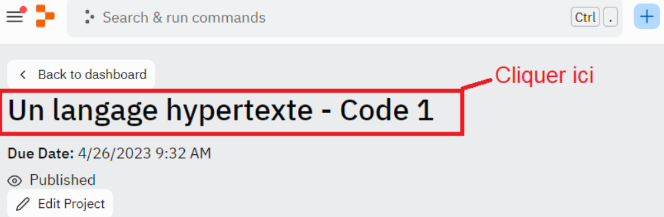

Durée :1 heure
Prérequis maîtriser les bases de JavaScript et de la POO
Environnement de travail :Replit
Maintenant que nous commençons à aborder des points de plus en plus complexes en JavaScript, un point fondamental s’impose : les fonctions asynchrones. Qu'est-ce ? C’est ce dont nous parlerons dans ce cours. En tant que développeur, vous serez régulièrement face à des situations où une fonction réalise une opération qui prend du temps, comme l’édition ou le traitement de données, des requêtes, etc. Mais le problème est que, par défaut, l’interprétation du langage JavaScript se fait de manière « synchrone ». Pour faire simple, cela veut dire que toutes les instructions sont lues et interprétées dans l’ordre, et que si une instruction met plus de temps, l’interpréteur attend que cette instruction soit exécutée avant de passer aux lignes suivantes.
Le problème est que dans bien des cas, nous chercherons à continuer d’utiliser l’application web, même pendant le temps de traitement d’une fonction. Comment procéder ?
Les opérations asynchrones et les callbacks sont des concepts clés en JavaScript pour gérer des tâches qui prennent du temps, comme les opérations d’entrée / sortie, les requêtes réseau ou les opérations de calcul intensif.
Dans ce cours, nous nous intéresserons donc aux notions d’opérations asynchrones, de fonctions asynchrones et de callback. Ces notions nous permettront de mieux gérer les codes où des instructions peuvent prendre un certain temps d’exécution. La notion d’asynchronisme est donc fondamentale pour faire gagner une application web en performance. Nous traiterons ces points au travers d’exemples concrets de codes et d’exercices à réaliser via l’interface Replit.
Pour avoir accès au code et à l'IDE intégré de cette leçon, vous devez :
Une fois ces étapes effectuées, nous vous conseillons de rafraîchir votre navigateur si le code ne s'affiche pas.
En cas de problème, redémarrez votre navigateur et vérifiez que vous avez bien accepté les cookies de connexion nécessaires avant de recommencer la procédure.
Pour accéder au code dans votre cours, cliquez sur le nom du lien Replit dans la fenêtre. Par exemple :
